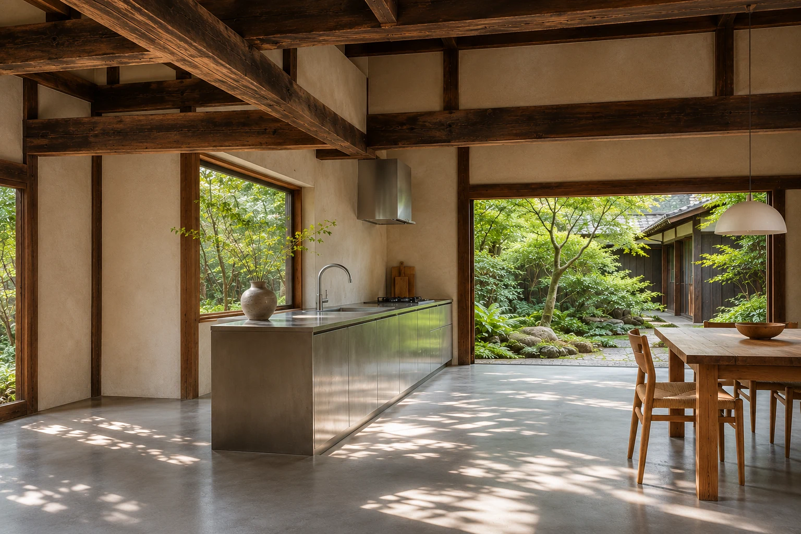
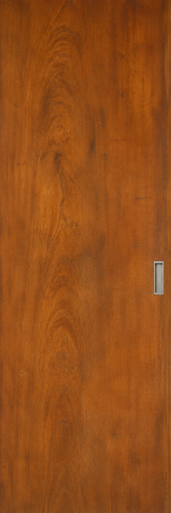

台所から、庭まで。
古い木の家のリフォーム
家との向き合い方
残したい柱から、
間取りを考える。
台所に立つと、家族の顔が見えない。南の庭は明るいのに、家の中は薄暗い。
間取りを少しひらくだけで、変わる暮らしがあります。
使い込んだ柱、頭上の太い梁。この家らしさを残しながら、今の暮らしに合う形を考えます。
間取りをひらく
壁の向こうに、
庭があった。
細かく分かれていた台所と居間を、庭へつながるひと続きの場所に。
同じ家の改修前と改修後を、図面で比べてみてください。
改修前 ── 壁で分かれ、台所から庭や居間が見えにくい間取り。
残す柱取り除く壁（改修後に表示）
改修の考え方を示す架空の図面です。実際に撤去できる壁は、建物の構造や傷みを調べて判断します。
改修の相談
「この家、どうしよう」
からで、大丈夫です。
直す場所も、予算も、まだ決まっていない。
まずは、暮らしの中で気になることから。
最初に、一緒に確かめること
- 今の暮らし
-
寒い、暗い、行き来しにくい。
毎日感じている不便を聞きます。 - 残したいもの
-
柱や建具、庭の眺め。
この家で好きな場所も教えてください。 - これからのこと
-
誰と、どんなふうに住んでいくか。
時期や費用の希望を整理します。
ボタンを押すと、
相談メモの記入欄が開きます。
メモは外部へ送信されません。
わが家の相談メモ
気になるところだけ書いてください。名前や住所は必要ありません。
保存したメモは、実際の工務店へ相談するときの控えに使えます。
この家で、
もう一度暮らそう。